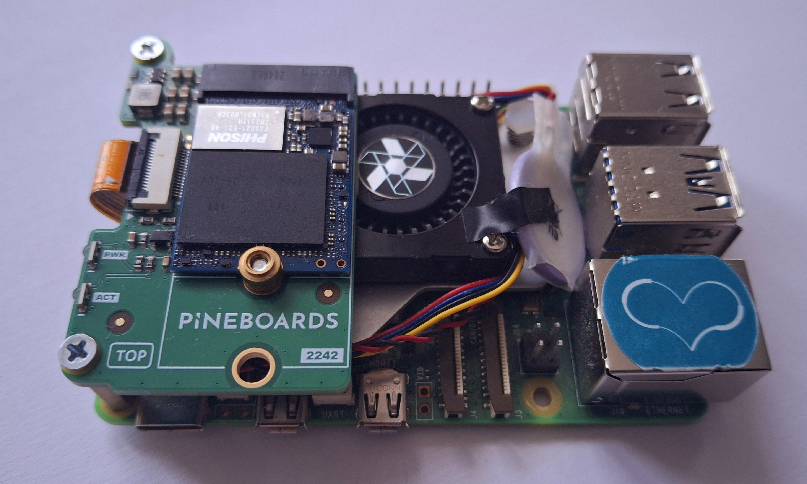
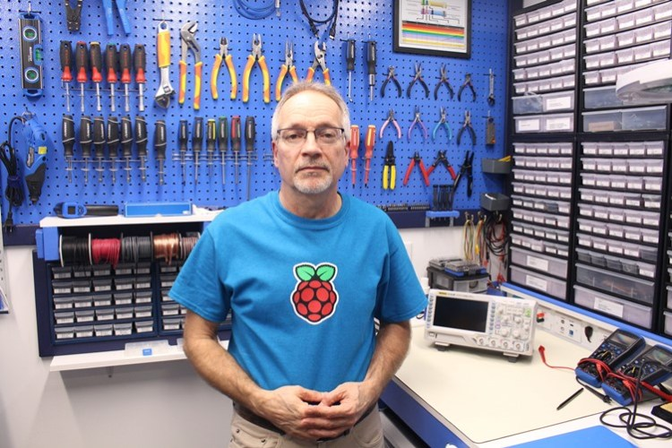

E-LECTRON | Start Electronics & Computer science!
Page in HTML
Who is this anyway?
Hi There! My name is Michael. I live in Poland. My hobbies include:
- Electronics,
- Computers,
- Coding and...
- LINUX!
GitHub profile
Check it out! Here is the link:
Michael's GitHub
What is this "E-LECTRON"
Generally speaking... Nothing. Let's say that it's my trademark 😎.
My computer
My computer is a Raspberry Pi 5 model B. And it is running Ubuntu Linux if you ask!)


It's desktop
Source: Michael's Gallery
My Heros
My "Heros" (or idols) are:
- Linus Torvalds,
- Steve Jobs,/li>
Steve - Very Clever person, Apple co-founder. I do not use Apple's products, but I like their products' compatibility. You make photo on iPhone, put it on iCloud, edit it on MacBook, and send it to the Internet.

Linus Torvalds
Source: www.britannica.com

Steve Jobs
Source: upload.wikimedia.org
{kind=link}
Their Quotes
Here are quotes from Linus and Steve:
Linus Torvalds: Computer is like an Air Conditioner—it becomes useless when you open Windows.
Steve Jobs: Your time is limited. Don't waste it living someone else's life.
Web Pages about electronics
Check out the DroneBot Workshop webpage
Source: www.dronebotworkshop.com
Music
Yes, I like music. For example, "All for Love" by Rod Stewart and Sting (Listen). I am making music too: